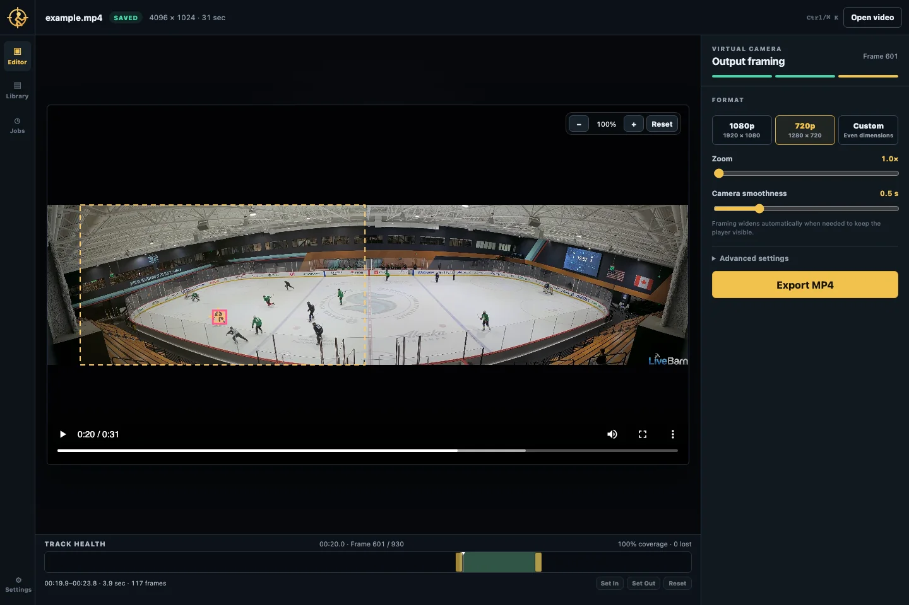
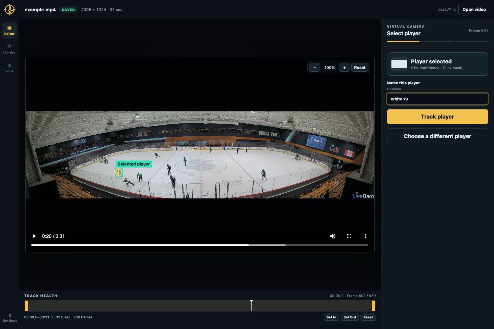
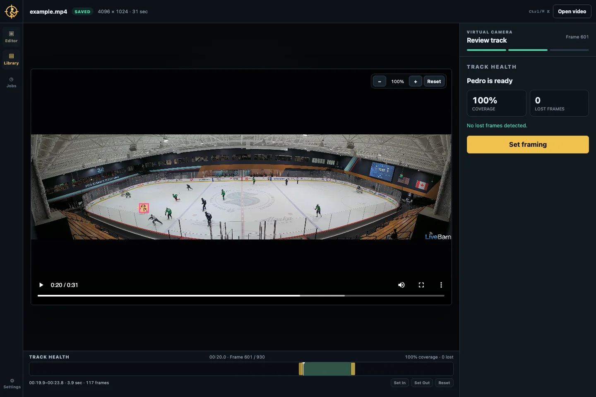

Private by architecture
Videos, frame caches, tracks, and exports stay on the machine running PlayTrack.
Open source · local first · built for panoramic footage
PlayTrack turns a fixed panoramic sports recording into a smooth, conventional video that follows the player you choose.

The wide-angle problem
Panoramic cameras capture every play, but leave the subject tiny and the viewer doing the searching. PlayTrack keeps the source wide and makes the final cut intentional.
Three deliberate steps
PlayTrack keeps the model work visible and the camera choices in your hands.
Scrub to a clear frame and click the player. On a CUDA machine, optional text grounding can find candidates from a description.
SAM 2 propagates the selection through your chosen range. Review coverage and lost frames before framing.
Choose dimensions, zoom, and smoothness. Preview the crop path, then export an H.264 MP4 with source audio.
The real editor
These screens come from the included development clip at frame 602 and a real completed track—no mock data.


Why PlayTrack
Videos, frame caches, tracks, and exports stay on the machine running PlayTrack.
Click selection uses a high-resolution source crop instead of shrinking the whole panorama first.
Gap filling, spring smoothing, and acceleration limits produce a usable crop path—not a box that jitters frame to frame.
PyAV and subpixel OpenCV crops produce a standard H.264 MP4 ready for editing or sharing.
Where it runs
Windows with NVIDIA CUDA is the primary target. macOS is supported for click-based use and development.
| System | SAM 2 tracking | Text selection | Notes |
|---|---|---|---|
| Windows + NVIDIA CUDA | Primary | Optional | CUDA Turing uses base-plus/fp16; Ampere+ can use large/bf16. |
| macOS + Apple Silicon | Supported | Unavailable | MPS with automatic CPU offload for long videos. |
| CPU only | Slow | Unavailable | Small SAM 2 model; useful for compatibility, not fast turnaround. |
RTX 2080 Ti support is implemented but still awaiting real-hardware verification; PlayTrack does not claim a measured 11 GB VRAM ceiling yet.
Install from source
PlayTrack is currently a developer-friendly source install. You will need Git, Python 3.12, uv, Node.js, and FFmpeg.
git clone https://github.com/pedrofuentes/playtrack
cd playtrack
python scripts/fetch_models.py
.\scripts\run.ps1The launcher checks tools, creates the backend environment, builds the frontend when needed, and opens PlayTrack.
git clone https://github.com/pedrofuentes/playtrack
cd playtrack
(cd backend && uv sync --extra dev)
(cd frontend && npm install)
python3 scripts/fetch_models.py
scripts/dev.shThe development launcher runs FastAPI on port 8000 and Vite on port 5173.
First run
Upload an MP4 or register a path already on the local server.
Mark in/out points so the model only tracks the segment you need.
Pause on a clear frame, click the player, give the track a name, and start SAM 2.
Check track health, tune the camera, and download the finished MP4.
Know before you run
The 930-frame example takes about 20 minutes on Apple Silicon. Short ranges are the fastest way to iterate.
When players overlap, SAM 2 can emerge following the wrong person without reporting lost frames. Multi-anchor splicing is the planned fix.
The default binds to localhost. LAN exposure has origin and host checks but no login; do not expose it to the public internet.
LocateAnything weights are covered by NVIDIA’s research license and are non-commercial. Text grounding is for personal/research use.
Build the camera you wanted
Found a reproducible tracking edge case? Have an idea for the next editing pass? Bring the clip details and hardware context.